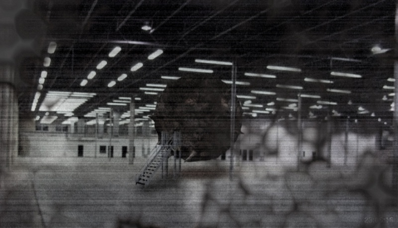

Item #: SCP-002
Object Class: Euclid

Special Containment Procedures:
SCP-002 is to remain connected to a suitable power supply at all times, to keep it in what appears to be a recharging mode. In case of electrical outage, the emergency barrier between the object and the facility is to be closed and the immediate area evacuated. Once facility power is re-established, alternating bursts of X-ray and ultraviolet light must strobe the area until SCP-002 is re-affixed to the power supply and returned to recharging mode. Containment area is to be kept at negative air pressure at all times.
Teams including a minimum of two (2) members are required within 20 meters of SCP-002 or its containment area. Personnel should maintain physical contact with one another at all times to confirm there is another person present, as perception may be dulled, skewed, or influenced by proximity to the object.
No personnel below Level 3 are permitted within SCP-002. This requirement may be waived via written authorization from two (2) off-site Level 4 administrators. Command staff issued such a waiver must be escorted by at least five (5) Level 3 Security personnel for the duration of their contact and must temporarily surrender their rank and security clearance. Following contact, command staff will be escorted at least 5 km from SCP-002 to undergo a seventy-two (72)-hour quarantine and psychological evaluation. If deemed fit for return to duty by psych staff, rank and security clearance may be restored when quarantine expires.
Description:
SCP-002 resembles a tumorous, fleshy growth with a volume of roughly 60 m³ (or 2000 ft³). An iron valve hatch on one side leads to its interior, which appears to be a standard low-rent apartment of modest size. One wall of the room possesses a single window, though no such opening is visible from the exterior. The room contains furniture which, upon close examination, appears to be sculpted bone, woven hair, and various other biological substances produced by the human body. All matter tested thus far show independent or fragmented DNA sequences for each object in the room.
Refer to the Mulhausen Report [cross-ref:document00.023.603] for details related to object's discovery.